|
|
QSEE SuperLite - Diagrams
This document provides information regarding the use of diagrams and
their graphical objects within the QSEE SuperLite modeling environment.
Although modeling techniques may sometimes appear to be very different
the fundamental graphical objects underlying their use often share
similar behavior. All diagrams within QSEE SuperLite are built
using variations of graphical nodes,
graphical links and
annotation objects.
To return to the main help page click the back
button below -
|
|
Graphical Nodes
These type of diagram objects appear in many different forms, depending on
the current tool being used. All graphical nodes however have an
associated shape or image. Graphical nodes are often rectangular or
elliptical in shape, but not always. Nodes are often connected to other nodes
via graphical links. Some examples of graphical nodes from
the multi-CASE tool are shown below.

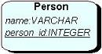

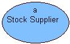
Nodes can often be resized by the user. This is achieved by
selecting the node to be resized (by left clicking on
the node) and dragging one of the selection handles. Nodes often have a
predefined minimum and maximum size (depending on the tool being used).
Some nodes may have a fixed size or be automatically resized to ensure they
correctly hold their contents. Nodes can often also be moved. This
is achieved by selecting an object and holding down the left mouse button (not
within a selection handle) while repositioning the object.
Graphical Links
These type of diagram objects appear as multi-point lines between
graphical nodes on a diagram. The appearance of the
link can vary within different tools. i.e. special symbols are often shown
at the end of links to signify some configurable property associated with the
link. Links often have textual labels attached to various sections of the
link, e.g. the source side. When a link is first created it usually only
has two points, i.e. a start point and an end point. As a link is being
added new link points can be inserted by pressing either the right mouse button
or the spacebar on the keyboard. The user may also add and remove
link points using the content sensitive menu associated with the link, by right
clicking on the link and selecting either "Add Link Point" or "Remove Link
Point". As a link is being added it may be straightened by holding down
the shift key, which causes the link to be either fully vertical or fully
horizontal. When a link is selected (by left clicking
on the link) the position of any of the link points may be moved by left
clicking and dragging the handle. The source and end points however are
often restricted in movement in order to ensure they remain attached to the
target graphical node. An example of a graphical link connecting two nodes
is shown below.
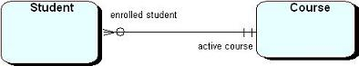
The Selection
Within the diagram editor one or more objects may be selected. When an
object is in the selection it may be manipulated individually from other objects
that are not in the selection. This allows manipulation of objects on an
individual basis. e.g. objects in the selection may be cut, copy and
pasted using the Edit menu options. An object that is in the selection is
surrounded by a bounding box that has eight attached handles (small squares).
When a link is selected only the handles are shown. An object is placed into the
selection by left clicking on the object using the mouse. e.g. an unselected
object and a selected object -
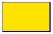
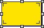
There are two ways of placing multiple objects into the selection. The
first method is to hold down the CTRL key while left clicking on each
element that is to be placed into the selection. This prevents the
existing objects from being removed as the new objects are being added. It is
also possible to select multiple objects by holding down the left mouse button
and dragging a selection box over the objects to be placed into the selection.
note: only objects that are completely within the selection box when the left
mouse button is released will be selected. e.g.
Before left mouse button is released:
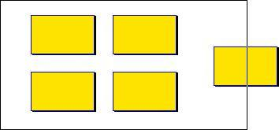
After left mouse button is released:
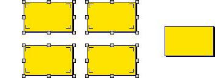
When objects are overlapped it is possible to use cyclic selection to step
through them in order to allow selection of objects that appear 'underneath'
other objects on the diagram. To do this left click on the top element to place
it in the selection. To select the element below hold down the shift key
and left click the top element again. Repeat this until the required element is
selected. e.g.
Top element selected with a left click:
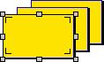
Second element selected by holding down the shift key and left
clicking:
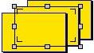
Third element selected by holding down the shift key and left
clicking again:
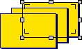
Printing Diagrams
Once a model has been developed it can be printed in a number of ways.
A standard print simply outputs the diagram in its current size, spanning
multiple pages as required. The page size of the currently selected
printer is indicated by light dotted lines on the background of the diagram
view. A print to fit page option automatically causes the model to
be rescaled to fit correctly on a single printed page. There are print
preview facilities for both styles of printing so that the output can be
seen on the screen exactly as it will be printed. A print setup
option is also provided that allows printer settings to be specified, e.g. page
size and orientation.
To perform a standard print select the "Project | Print Diagram" option from
the main menu while the diagram you want to print is in focus, i.e. being worked
upon. (see example below). Alternatively press Ctrl-P on the
keyboard, or click the printer button within the main toolbar. To perform a
print to fit select the "Project | Print To Fit Page" option from the main menu
while the diagram you want to print is in focus. Alternatively click the
print to fit button within the main toolbar. As an alternative to printing, an
entire diagram can be saved as a bitmap (bmp) file. This allows diagrams
to be easily imported into third party applications (for either formatting or
printing purposes). To save a diagram select the "Save Image As" option from the
diagram's context sensitive menu.
The printing related options of the project menu are shown below (indicated
by the red rectangle).
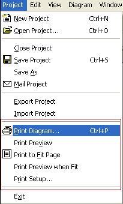
Back To Top
Diagram Window Manipulation
In order to aid in the modeling process a number of features are provided
that allow a diagram editor window to be visually manipulated. These
features do not effect the model in anyway, they just change how it is displayed
to the user.
To help work on large or complex models it is possible to zoom in and out of
diagrams. This can be done through the main menu bar by selecting the "Diagram |
Zoom" sub-menu. It is then possible to select the zoom factor for the current
diagram by left clicking on the desired percentage. By default the size is set
to 100%. It is also possible to zoom in and out by left clicking on the
magnifying glass icons located on the main toolbar as shown circled below -
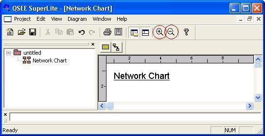
It is possible to display grid points and rulers on the diagram background to
make it easier to align objects. An option is also proved to ensure that the
positioning and resizing of objects is constrained by being snapped to a grid
point. By default grid points are not shown, but the grid snap facility is
turned on. Also rulers are shown by default. Each of these options
can be turned on and off from the "Diagram" menu as shown below -
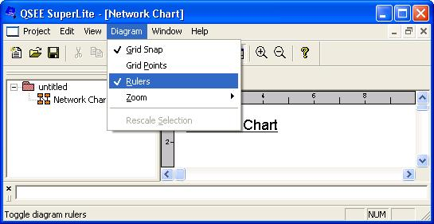
Back To Top
Annotation Objects
All tools within the QSEE SuperLite environment provide support for annotation
objects on their diagrams. Annotation objects allow additional information
to be added to a model without interfering in anyway with the semantics of the
model itself. i.e. these objects are purely commentary and have no underlying
theory or association with the modeling technique. There are four type of annotation
object that are supported, these are -
- Graphical Note Elements - Allow a note to be shown directly on the model
and associated with specific elements.
- Textual Annotations - Allow textual comments to be shown, using any available
font size, color etc.
- Graphical Annotations - Allow simple graphical shapes, such as ellipses
and rectangles to be shown on the model
- Image Annotations - Allow an imported image file to be shown on a model,
e.g. a map.
Each annotation has its own context sensitive menu containing appropriate options.
The annotations may be added using the context sensitive menu associated with
a diagram. Right click on the diagram area and select either "Add
Note"; "Add Free Text"; "Add Free Graphic"; or "Add
Free Image". Position the annotation outline where required and left click.
Back To Top

To return to the main help page click the button
below -